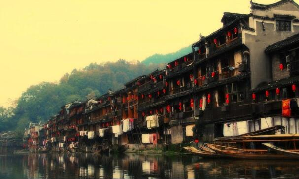
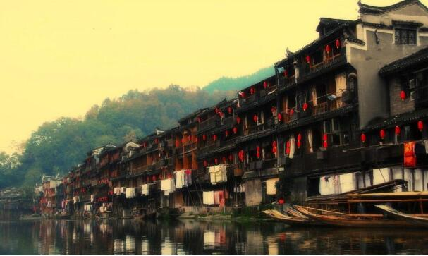

morly旅游圈
这座古城已经为你等待了两千年”，第一次听到这句广告词的时候就很想来看看它了，这片深埋于湘西山林中的水乡。 再知道凤凰是因为沈从文先生的《边城》，和绝大多数造访凤凰的人一样， 带着《边城》这本文化地图来探寻那这座世外桃源，沱江、万明塔、吊脚楼，还有吊脚楼中生活着的悲欢离合。 所谓“大隐隐于世，小隐隐于野”，这座两千年前就已经名声鹊起的江河古镇因为河道的改变和道路的修建， 在之后的岁月中，隐藏于只属于自己的一片净土中。曾经的商贾云集往来舟楫的南腔北调早已沉浸于山林沃野之中安享天年坐看云起， 这是早熟之后的沦落，还是开眼之后的冥思？可是不管怎么说，正如一份旅游周刊对于这座古镇的评语“梦想中的隐世之地”一样，依旧对这里充满遐想。 在我看来这句评语是对外人和后人说的，凤凰人情愿还是不情愿的在这片山林中间建成了一座采菊东篱下，悠然见南山的田园， 也凭此形成了一份隐居的气质，人们自得于其中，阡陌交通，鸡犬相闻，人们在不知外世的环境中生活着。
而现在，凤凰的大门打开了，恍如隔世的门的两边的人竟然发现这份似乎与现今背道而驰的气质竟然在繁忙的都市中成为了一股张力， 吸引着无数醉心于工作，无心与自心得人们前来朝拜，于是那份久远沉静的气质开始有了现代社会存在的理性了。 我更想说，凤凰不仅是“梦想中的隐世之地”，还是“入世者的田园梦乡”。她是一杯陈藏多年的美酒，久存而弥香；她是一方雕琢精细的玉章， 通灵而韵雅；她是一艘飘零寒江的舟楫，于无声中行远；她是一位沿江而坐的少女，在晨雾中看花。 这里应该已经很难用净土来形容了，可这里还是净土。可以想象，一座沉寂了两千年的小城一旦为世人认识所迸发出的吸引力会有多大，喧嚣的街巷， 拥挤的人群，四处招展的广告标语，沿街而立的小商小贩，都与《边城》中世外桃源般的不知有汉，无论魏晋的情景想去很远，可是这里的古镇依然保持着古朴的风格， 曾经的吊脚楼下静静远去的沱江水，以及水上漂浮的一座座竹筏似乎还是依旧能向你讲述很多陈旧的往事。 据说，《边城》是中国最有可能获得诺贝尔文学奖的作品，哈佛大学教授评价沈先生是中国可以和鲁迅齐名的伟大的作家， 作品的美也带来了其中背景的美。那一弯静静的沱江水，一座座古朴的吊脚楼中发生的小城故事能够获此殊荣，除了和先生的写作技艺有关， 我想，更重要的是这片饱具了中国标本式的乡土村落的感情和生活有关，所谓一方水土才能养育一方人，带着这样的感情，我就愈发期待这里了，希望有机会我能亲自去一次凤凰古城。
晚风轻弗伊人醉 天明还是旧人颜 夜晚酒吧的喧嚣 霓虹灯的璀璨，让众人沉醉其中，第二天醒来依然还是那，古老的吊脚楼。 缓缓流淌的沱江水,没有了昨晚的纸醉金迷。 脚楼依水半空悬，浴火重生已涅槃。 借问酒家何处醉，沱江清水半池欢。 “翠翠今年十五岁，她同时喜欢天保和傩送……” 去凤凰，我想这是一场心灵的旅行。
内容整理至网络，如有侵权，请联系我们！1255394075@qq.com
 
